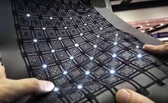
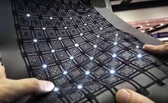

What are E-Textiles?
E-Textiles, also known as electronic textiles or smart fabrics, incorporate technology into fabrics for innovative uses in fashion, medicine, and more.
E-Textiles, also known as electronic textiles or smart fabrics, incorporate technology into fabrics for innovative uses in fashion, medicine, and more.
